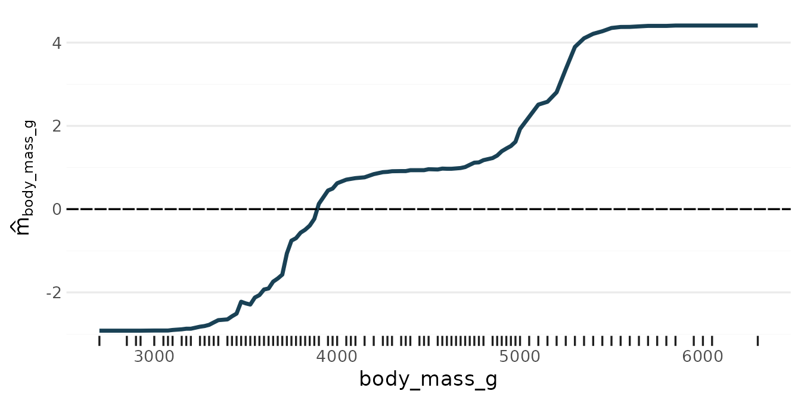
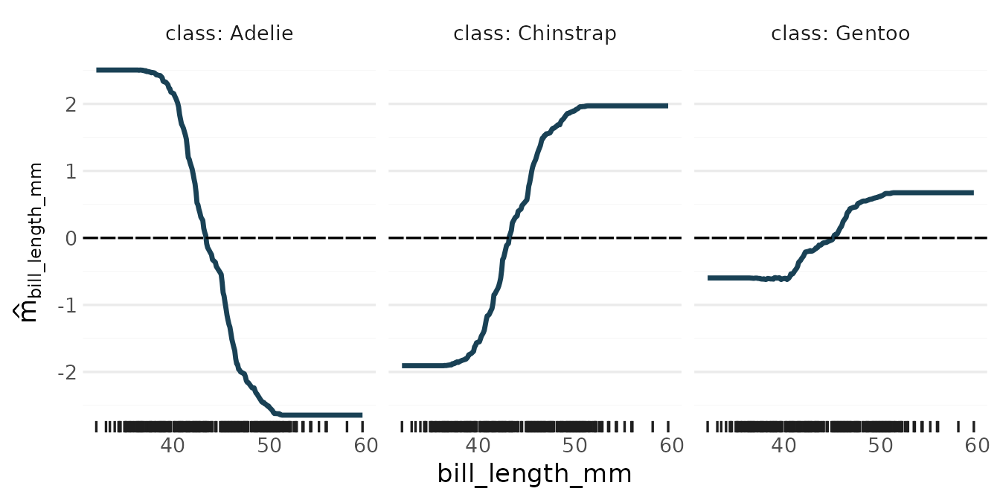

For a factor outcome (binary or multi-class with more than two
classes), rpf() fits a classification model. It takes the
same steps as for regression, with the same defaults: the number of
splits is chosen out of bag, the components are pruned, and three-way
components are simplified such that each can be shown as the sum of at
most 10 heat maps. The model predicts scores, and every score is a sum
of components, as the prediction of a regression model is. With the
losses "logit" (the default) and
"exponential", the scores are on the log-odds scale: with
two classes there is one score, the log-odds of the second class, and
with more classes there is one score per class, and the scores sum to 0.
With "L1" and "L2" the scores are not log-odds
but fitted 0/1 class indicators. The losses are described in “The
losses” below.
Two classes
set.seed(1)
by_sex <- rpf(sex ~ ., data = penguins, nthreads = 2)
by_sex
#> ── Random Planted Forest model ─────────────────────────────────────────────────
#> Classification (logit loss), 2 classes: female, male. Scores = intercept + the sum of 4 components.
#> Intercept: 0.0588925
#>
#> Components (largest first), importance = share of the variance of the prediction on the training rows:
#> component importance
#> body_mass_g 55%
#> bill_depth_mm 37%
#> bill_length_mm 17%
#> species 14%
#>
#> How it was chosen:
#> The forest: 200 tree families of 59 splits (chosen out of bag; growing stopped at 59).
#> From the forest's 63 nonzero components (purified): those with a share of at least 3% of the forest's Var(prediction), as they are (rule D).
#> Rule and threshold chosen by out-of-bag error (1-SE rule; 5 folds, seed 682372961) among 16 candidates.
#> Left out: 59 components, shares together 4% (largest flipper_length_mm, 1.4%).predict() returns probabilities by default, classes with
type = "class", and the scores with
type = "link":
predict(by_sex, head(penguins))
#> # A tibble: 6 × 2
#> .pred_female .pred_male
#> <dbl> <dbl>
#> 1 0.154 0.846
#> 2 0.555 0.445
#> 3 0.771 0.229
#> 4 0.634 0.366
#> 5 0.122 0.878
#> 6 0.832 0.168
predict(by_sex, head(penguins), type = "class")
#> # A tibble: 6 × 1
#> .pred_class
#> <fct>
#> 1 male
#> 2 female
#> 3 female
#> 4 female
#> 5 male
#> 6 female
predict(by_sex, head(penguins), type = "link")
#> # A tibble: 6 × 1
#> .pred
#> <dbl>
#> 1 1.71
#> 2 -0.221
#> 3 -1.21
#> 4 -0.548
#> 5 1.97
#> 6 -1.60The components, on the scale of the scores
The components add up to the scores, not to the probabilities:
comp <- predict_components(by_sex, penguins)
head(comp$m)
#> bill_length_mm bill_depth_mm body_mass_g species
#> <num> <num> <num> <num>
#> 1: -0.58025340 1.7503844 -0.7566046 1.234439
#> 2: -0.52391729 -0.4248011 -0.5651751 1.234439
#> 3: -0.09361972 0.4104165 -2.8233288 1.234439
#> 4: -1.83280502 2.5005622 -2.5086987 1.234439
#> 5: -0.52168263 2.9404168 -1.7410431 1.234439
#> 6: -0.69556179 -0.2929853 -1.9051425 1.234439
all.equal(comp$intercept + rowSums(comp$m), predict(by_sex, penguins, type = "link")$.pred)
#> [1] TRUEWith two classes there is one score, the log-odds of the second level
of the outcome (here male): a positive contribution moves a
penguin towards male, a negative one towards
female. glex draws them as for regression:
plot(comp, "body_mass_g")
Three or more classes
With more classes, the model has one score per class, and the scores sum to 0. The difference of two classes’ scores is the log-odds of one class against the other. Every component has one column per class:
set.seed(1)
by_species <- rpf(species ~ ., data = penguins, nthreads = 2)
by_species
#> ── Random Planted Forest model ─────────────────────────────────────────────────
#> Classification (logit loss), 3 classes: Adelie, Chinstrap, Gentoo. Scores = intercept + the sum of 7 components.
#> Intercept per class: Adelie 1.207020, Chinstrap -0.836373, Gentoo -0.370647
#>
#> Components (largest first), importance = share of the variance of the scores (centred across the classes) on the training rows:
#> component importance
#> bill_length_mm 21%
#> island 17%
#> bill_depth_mm 6%
#> flipper_length_mm 5.6%
#> body_mass_g 2%
#> sex 1.2%
#> bill_length_mm:island 0.33%
#>
#> How it was chosen:
#> The forest: 200 tree families of 30 splits (chosen out of bag; growing stopped at 42).
#> From the forest's 60 nonzero components (purified): those with a share of at least 0.3% of the forest's Var(prediction), as they are (rule D).
#> Rule and threshold chosen by out-of-bag error (1-SE rule; 5 folds, seed 682372961) among 16 candidates.
#> Left out: 53 components, shares together 0.24% (largest bill_depth_mm:bill_length_mm, 0.052%).
predict(by_species, penguins[c(1, 200, 300), ])
#> # A tibble: 3 × 3
#> .pred_Adelie .pred_Chinstrap .pred_Gentoo
#> <dbl> <dbl> <dbl>
#> 1 1.000 0.0000859 0.000100
#> 2 0.000132 0.000493 0.999
#> 3 0.0181 0.982 0.000134
comp3 <- predict_components(by_species, penguins)
comp3$target_levels
#> [1] "Adelie" "Chinstrap" "Gentoo"
names(comp3$m)[1:6]
#> [1] "bill_length_mm__class:Adelie" "bill_length_mm__class:Chinstrap"
#> [3] "bill_length_mm__class:Gentoo" "bill_depth_mm__class:Adelie"
#> [5] "bill_depth_mm__class:Chinstrap" "bill_depth_mm__class:Gentoo"
comp3$intercept
#> Adelie Chinstrap Gentoo
#> 1.2070200 -0.8363733 -0.3706467The columns are named
<component>__class:<level>, one for each of
Adelie, Chinstrap and Gentoo. A
positive contribution moves a penguin towards that class, a negative one
away from it, and no class is singled out as a reference. A component is
kept or dropped for all classes together: its size is its variance
summed over the classes’ scores, centred across the classes. glex draws
one panel per score:
plot(comp3, "bill_length_mm")
How the choices are scored
Every out-of-bag choice, of the number of splits and of the pruning, is scored by the loss’s own criterion, corrected for the number of out-of-bag families as for regression:
- for the losses that give probabilities, the log-loss of the
probabilities
predict(type = "prob")returns; - for
loss = "L1"and"L2", which fit class indicators directly, the squared error of the scores summed over the classes (the Brier score).
The losses
loss chooses how the families fit the classes:
-
"logit"(the default) and"exponential"fit scores on the link scale, andpredict(type = "prob")returns their softmax, so the probabilities are proper. With two classes there is one score, the log-odds of the second class. With more, both have one score per class, summing to 0, so the link predictions and the components have one column per class."logit"is the multinomial log-likelihood and"exponential"the multiclass exponential loss SAMME. -
"L1"and"L2"fit 0/1 class indicators directly, as regression would; their scores are not probabilities, andtype = "prob"truncates them to [0, 1].
A step, and the pseudo-row
Every split moves the scores of the rows of each of its two new
leaves by one step. For "exponential" and
"logit", the step minimises the leaf’s penalised
loss: the loss of its rows plus that of one imaginary row, the
pseudo-row, split evenly over the classes and placed at the score the
leaf has now. The pseudo-row says “stay where you are”, so it pulls
every step towards no change, and more so the fewer rows the leaf
has.
Two things follow:
-
A pure leaf stops at a finite level. If all rows of
a leaf have one class, the loss of its rows alone falls forever as its
score grows, and an unpenalised step would push the score to infinity.
The pseudo-row, which holds a share of the other classes, stops it: with
two classes a pure leaf of
nrows goes to aboutlog(2n + 1)and then stays there. -
A pure split or a repeat gains nothing. A split is
scored by what its two leaves’ steps gain over the step the parent leaf
would make by itself, and each new leaf pays for its own pseudo-row.
Splitting a pure leaf cannot separate anything, and repeating a split
whose leaves are already at their best level cannot improve them, so
both score no gain and are not made. A round in which no candidate gains
makes no split (it still counts towards
n_splits).
The table shows the score of a point in a pure region as one tree
family grows: the two classes are separated by x1 > 0.5,
and x2 is noise.
set.seed(1)
n <- 200
sep <- data.frame(x1 = runif(n), x2 = runif(n))
sep$y <- factor(ifelse(sep$x1 > 0.5, "b", "a"))
rounds <- c(5, 10, 30, 100, 300)
score_after <- function(loss, k) {
set.seed(3)
f <- rpf(y ~ ., data = sep, loss = loss, n_families = 1, n_splits = k, prune = FALSE)
c(score = predict(f, data.frame(x1 = 0.9, x2 = 0.5), type = "link")$.pred,
leaves = nrow(rpf_boxes(f)) - 1)
}
pure <- data.frame(
rounds = rounds,
t(sapply(rounds, function(k) score_after("exponential", k))),
t(sapply(rounds, function(k) score_after("logit", k)))
)
names(pure) <- c("rounds", "exponential score", "exponential leaves", "logit score", "logit leaves")
pure
#> rounds exponential score exponential leaves logit score logit leaves
#> 1 5 1.036092 2 1.036092 2
#> 2 10 5.200472 6 5.219555 6
#> 3 30 5.876469 11 5.070276 13
#> 4 100 6.439066 13 5.070276 13
#> 5 300 6.439066 13 5.070276 13The score stays at its level from the first rounds on, and the family
soon stops adding leaves: no candidate gains any more. So a fixed, large
n_splits does not make the model overconfident.
exact_step
"exponential"’s step has a closed form, so it is exact.
"logit" scores the candidates by the second-order (Newton)
gain of its penalised loss. With exact_step = TRUE (the
default), the chosen split’s two leaves then get the exact minimisers,
by Newton’s method on their rows; exact_step = FALSE keeps
the one Newton step, which is a little faster. The search is the same
either way, and exact_step does not change
"exponential" fits.